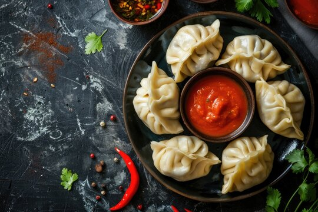

Momo.

Momo is a popular dish among Nepali community which is now famous all over the world dues to its delicious taste.
- Keema(Buff meat paste).
- White flour
- Momo masala
- Onion
- Peanut
- Tomato
- Cabbage
- Ginger paste
Steps
- First of mix the Keema with chopped onion, ginger paste, chopped cabbage and Momo masala.
- Make a dough with the white flour with combination of water and rest it for 2-3 hours.
- After preparation of dough and keema take a pinch of dough and roll it flat with roller or any utensils available.
- Take a small piece of keema and stuff it inside the dough you rolled flat out and close the dough. Continue this same process as much as per your apetite.
- Prepare a water for boiling into the momo pot.
- After the water is boiled stuff all the momo in the momo utensils for storing the momo.
- Wait for about 5-8 mins.
- Wallah! your dish is ready to be served.